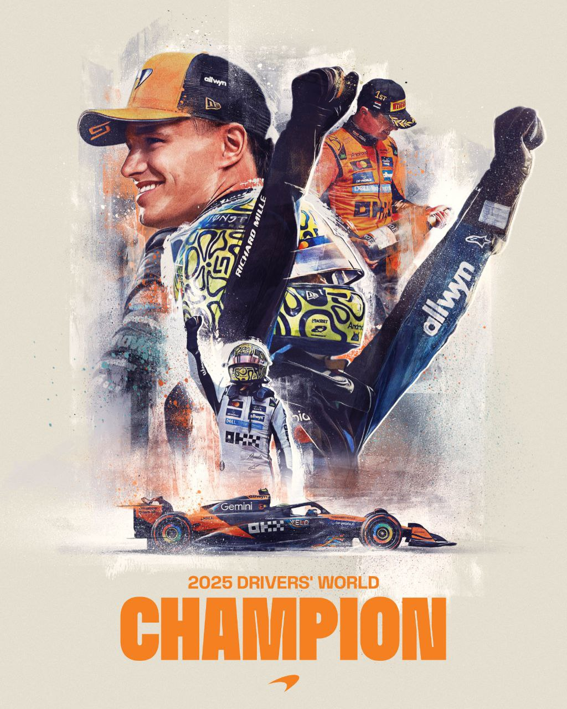
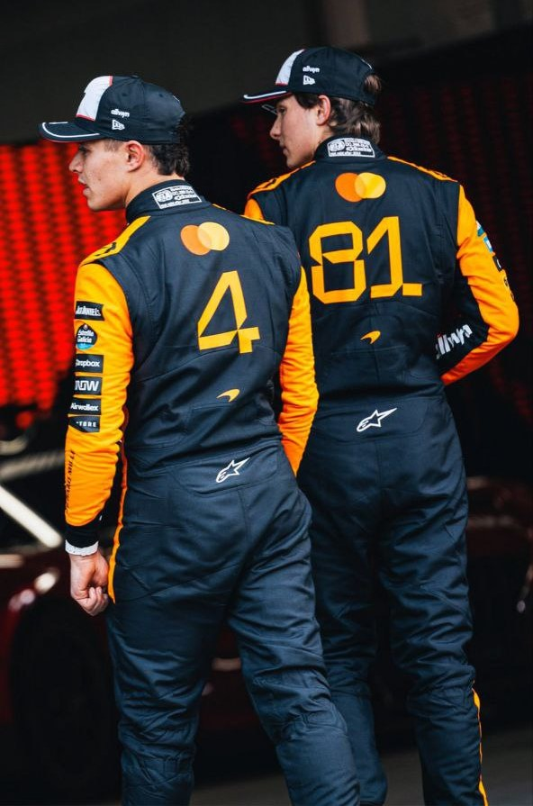

La temporada 2025 de Fórmula 1 ha bajado el telón con el guion más dramático posible. Lando Norris es el nuevo Campeón del Mundo, coronándose en el circuito de Yas Marina por un margen de tan solo 2 puntos sobre Max Verstappen.
Pero este título no es solo la historia de un piloto; es la consagración de la dupla más letal de la parrilla: Norris y Piastri, quienes han llevado a McLaren a un dominio que no se veía desde los tiempos de Senna y Prost.
La carrera final fue el reflejo perfecto de una temporada caótica y brillante. Max Verstappen (Red Bull) hizo lo que tenía que hacer: ganar la carrera. Sin embargo, el tercer puesto de Lando Norris fue suficiente —por la mínima— para asegurar la corona.
El factor decisivo, una vez más, fue Oscar Piastri. El australiano terminó segundo, intercalándose entre Verstappen y Norris, actuando como el escudero perfecto en el momento de la verdad, aunque durante el año demostró ser mucho más que eso.
El podio final del campeonato quedó así:
1. Lando Norris (McLaren): 423 puntos
2. Max Verstappen (Red Bull): 421 puntos
3. Oscar Piastri (McLaren): 410 puntos

Si bien los focos están hoy sobre Lando Norris, el análisis de la temporada 2025 es imposible sin la figura de Oscar Piastri. El australiano ha completado una campaña sensacional, terminando a solo 13 puntos de su compañero campeón.
Lejos de ser un "segundo piloto", Piastri sumó 7 victorias esta temporada, la misma cantidad que el propio Norris. Esto generó momentos de tensión interna (como las famosas "Papaya Rules"), pero elevó el nivel competitivo del equipo a la estratosfera.
Gracias a la consistencia de ambos, McLaren no solo celebra el título de pilotos, sino que ha arrasado en el Campeonato de Constructores por segundo año consecutivo, consolidando una nueva hegemonía en la F1. Mientras Red Bull dependía casi exclusivamente de la magia de Verstappen, McLaren atacaba siempre con dos lanzas.

Lando Norris, visiblemente emocionado tras cruzar la meta: "No tengo palabras. He soñado con esto desde que era un niño. Ha sido la batalla más dura de mi vida, contra Max y contra Oscar. Este trofeo es de todo Woking."
Oscar Piastri, demostrando su habitual elegancia: "Ha sido un año increíble. Duele quedarse tan cerca, pero estoy orgulloso de lo que hemos logrado como equipo. Lando se lo merece, ha estado inmenso bajo presión. El año que viene, eso sí, iré a por el número 1."
Con el cambio de reglamento en el horizonte para 2026, la F1 entra en terreno desconocido. Pero una cosa es segura: la rivalidad interna en McLaren apenas acaba de comenzar. Norris es el campeón, pero Piastri ha demostrado que tiene velocidad y mentalidad para destronarlo.